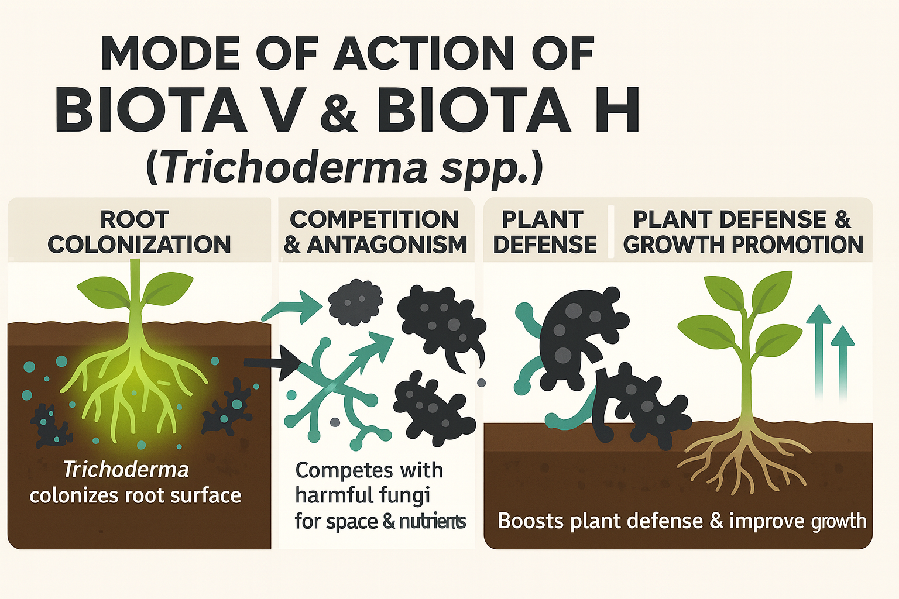

Overview
Biota harnesses the power of Trichoderma viride and Trichoderma harzianum (1×108 CFU/g), fungi known for their antagonistic properties against soil-borne pathogens such as Fusarium, Pythium, and Rhizoctonia. It improves plant root strength, nutrient uptake, and overall soil microflora balance.
Mode of Action
Trichoderma species act through mycoparasitism, competition, and antibiosis. They parasitize harmful fungi by coiling around their hyphae, releasing enzymes, and degrading cell walls. Additionally, they promote root growth by producing hormones like auxins and gibberellins.
Key Features
- Contains a high spore count (1×108 CFU/g) for efficient soil colonization.
- Acts as a biological fungicide and a root growth stimulator.
- Reduces incidence of soil-borne diseases naturally.
- Improves nutrient uptake and enhances soil fertility.
- Certified organic-compatible formulation suitable for IPM programs.
Dosage & Dilution
| Variant | Formulation | CFU Count | Dosage (per acre) | Dilution | Application |
|---|---|---|---|---|---|
| Biota V-EC | EC | 1×108 CFU/g | 400–500 ml | 1.5–2.5 ml/L | Soil drench / foliar |
| Biota V-WP | WP | 1×108 CFU/g | 500 g – 1 kg | 2–3 g/L | Soil drench / seed treatment |
| Biota H-EC | EC | 1×108 CFU/g | 400–500 ml | 1.5–2.5 ml/L | Soil drench / foliar |
| Biota H-WP | WP | 1×108 CFU/g | 500 g – 1 kg | 2–3 g/L | Soil drench / root dip |
Compatibility
- Compatible with organic manures, biofertilizers, and compost teas.
- Avoid mixing with chemical fungicides and bactericides.
- Apply during early morning or evening for maximum spore viability.
Target Use & Benefits
Recommended Crops: Vegetables, pulses, cereals, plantation crops, fruits, and flowers.
Target Pathogens: Fusarium, Rhizoctonia, Pythium, Sclerotium, and other root pathogens.
Key Benefits: Enhances soil health, improves root development, suppresses pathogens naturally, and promotes sustainable yield improvement.